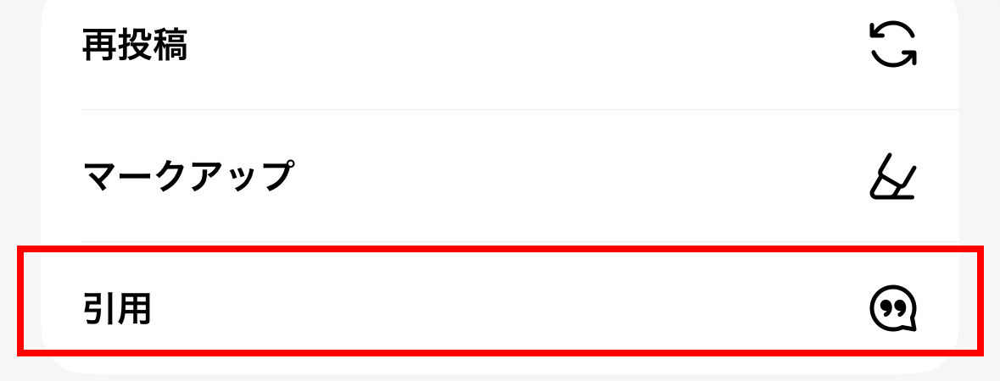
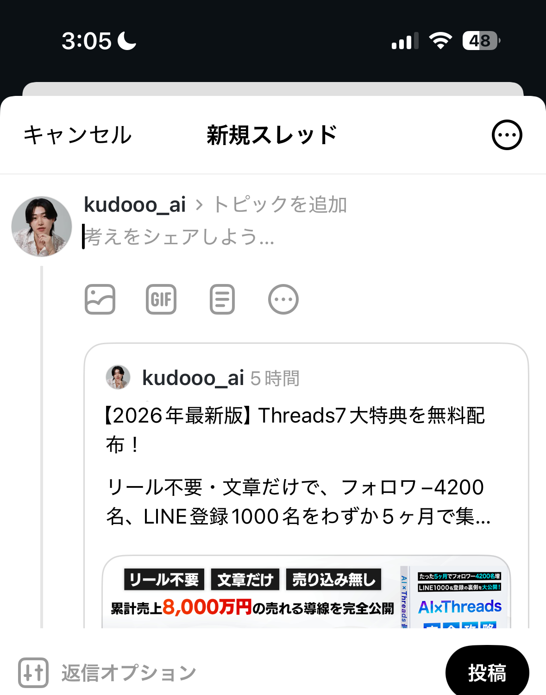

第1章：なぜSNSを頑張っても成果が出ないのか — 9割がハマる5つの失敗
今SNS集客で成果が出ていないなら、それはあなたの努力不足でも、センスがないからでもありません。やり方が、集客につながる構造になっていないだけです。まずは自分がどのパターンにハマっているか、確認してください。
SNS集客で失敗する5つのパターン
2,500投稿以上のデータ分析と、100名以上の集客支援をしてきた中で見えてきた、成果が出ない人の典型パターンが5つあります。この5つのどれかに当てはまっている状態で、どれだけ投稿数を増やしても、AIを使っても、成果は出ません。
Instagramで疲弊する。Threadsで成果が出ない。AIで薄い投稿を作る。伸びても収益につながらない。そしてSNS疲れしてやめていく。今のSNS集客で成果が出ない人は、だいたいこのどれかにハマっています。
問題は「努力」ではなく「構造」
ここで、はっきり伝えたいことがあります。
これはあなたが悪いわけでも、努力が足りないわけでも、センスがないわけでもありません。今のやり方が、集客・売上につながる構造になっていないだけです。
今のSNS集客は、ただ頑張れば勝てる時代ではありません。
- 頑張る場所 — どの媒体で戦うか
- 投稿の型 — どんな構造で書くか
- AIへの指示の出し方 — 何を渡して作らせるか
この3つがズレていると、どれだけ投稿しても成果にはつながりません。逆に言えば、この3つを直すだけで、同じ努力量でも結果はまったく変わります。あなたに足りないのは根性ではなく、正しい構造です。この教材では、この3つを順番に直していきます。
まとめ
- 成果が出ないのは努力不足ではなく、やり方が「集客につながる構造」になっていないから
- 失敗パターンは5つ。リール疲弊・自己流Threads・AI丸投げ・いいね止まり・SNS疲れ
- 直すべきは「頑張る場所」「投稿の型」「AIへの指示」の3つだけ
第2章：Threadsをやるとこうなる — 週1件だったLINE登録が毎日10件に
だから理論じゃなくて数字で証明します。まず僕自身、そしてこのやり方を実践した受講生の、リアルな成果を見てください。
僕自身の実績
僕はリール投稿不要・文章だけのThreads運用で、6ヶ月でフォロワー5,000名、LINE登録者1,400名を集客しました。SNSを活用した売上は累計1億円以上です。
でも、最初からうまくいったわけじゃありません。僕は1年半前、Instagramで挫折しています。リールを200本以上投稿するために、台本を書いて、撮影して、編集して、分析して。かなりの時間とお金を使いました。
結果は、フォロワー700人ほど。LINE登録は週に1〜2件あればラッキーという状態でした。「毎日頑張ってるのに、数字が伸びない」「自分にはSNSのセンスがないのかな」——毎日そう考えていました。もしかしたら、今のあなたは過去の僕と同じ状況かもしれません。
そこから戦う場所をThreadsに変えて、AIを組み合わせた途端、連日LINE登録が10件以上入るようになりました。200本のリールで届かなかった人たちに、テキストの投稿があっさり届いた。正直、衝撃でした。今かかっている時間は1日1時間ほど。リール200本の頃より圧倒的に労力は減って、成果は右肩上がりです。
さらに僕は、感覚でThreadsを語っているわけではありません。AnalycaというThreadsの分析システムを自社で開発・運用していて、2,500投稿以上のデータとインサイトをAIと一緒に分析しながら、「どんな投稿が伸びるのか」「どんな投稿が集客や売上につながるのか」を検証し続けています。この教材の中身は、その成果実証済みの内容だけです。
受講生インタビュー
そして、これは僕だけの再現性ではありません。未経験・新規アカウント・フォロワー100人以下から始めた受講生でも、成果が出ています。しかも多くの受講生が、リール時代の半分以下の労力で2倍以上の集客実績を出していて、義務感ではなくSNS運用を楽しんで取り組めています。
0→1から380万円の収益化達成
Threads運用1ヶ月で10万円の収益化
1ヶ月でフォロワー2,400名達成
1ヶ月でフォロワー1,300名・LINE登録400名増加
Threads運用2ヶ月で150万円の収益化
Threads運用1ヶ月でLINE登録200件
他にも成果が続出しています
受講生のリアルなスクリーンショットです。1ヶ月以内、フォロワー100名以下でもこれだけの成果が出ています。


僕がこの教材を作った理由
ここで少しだけ、本音の話をさせてください。
本音を言うと、僕は今のSNS業界に違和感があります。「投稿しなきゃ」「インプットしなきゃ」——義務感だけで発信して疲弊していく人が、大量発生しています。そしてその発信の中身は、誰かから聞いた情報の又聞き。例えるなら、カルピスの原液がどんどん薄まっていくような情報がタイムラインに溢れています。一方で、表面だけ整えた発信がたまたま伸びて、中身の濃さと関係なく稼げてしまう構造もある。
ちゃんと中身がある人、ちゃんとお客さんに向き合っている人が報われずに、それっぽい発信だけが伸びていく。僕はこの構造が、正直悔しいんです。だからこそ、本物の価値を持っている人にこそ、正しい武器を持ってほしい。
最近のThreads界隈で言うと、安価なnoteを販売して稼ぐ手法が流行っています。僕も実際にいくつか買って、中身を確かめました。正直に言うと、どこかで聞いた話を薄く並べただけの、価格に見合わない内容がほとんどでした。ああいう教材で学んだ人が成果を出せずに「自分には向いてない」と諦めていく。僕は、これが一番許せないんです。
だからこの教材は、その真逆を行くと決めました。
- ボリュームと質で圧倒する — テキストだけで約2万文字。有料で売られているnoteより濃い内容を、無料で配ります。さらに約60分の動画講座もセットです
- これだけで完結させる — 中途半端な有料教材に手を出すくらいなら、この無料教材を全部勉強すればそれで完結する。そう言い切れる内容にしました
そもそも僕は、仕事やビジネスは本来楽しいものだと思っています。成果を出す喜び。成長する喜び。自分のやってきたことが、必要な人に届いて感謝される喜び。でも現実には資金繰りがあって、「売上を立てなきゃ」「発信しなきゃ」という義務が先行し、いつの間にかSNSが自分をすり減らす苦行になっていく。
だから、僕の提案はこうです。集客はThreads×AIの仕組みに任せて、義務感の投稿労働から解放される。空いた時間と心の余裕で、目の前のお客さんを勝たせることに集中する。
まとめ
- 僕も受講生も、Threads×AIで結果が変わった。成果が出なかったのは方向のズレで、方向を変えれば努力は報われる
- この教材は約2万文字＋約60分の動画講座。「これだけで完結」させる内容にした
- 目指す基準は「お客さんが来すぎて困る」状態。集客は仕組みに任せ、お客さんを勝たせることに集中する
第3章：伸びる投稿は「何」で決まるのか — アルゴリズムの正体と3原則
なぜThreadsなのか、なぜ長文なのか、なぜAIなのか。仕組みを理解しないまま投稿しても、再現性は生まれません。2,500投稿の分析データをもとに、伸びる構造を解説します。
なぜ媒体はThreadsなのか
理由は3つあります。
理由1：文章だけなのに、圧倒的に集客できる
Threadsは撮影も編集も不要、顔出しも必須ではありません。スマホ1台で、移動中でもカフェでも家事の合間でも投稿できます。リール1本に3時間かけていた人が、同じ時間でテキストなら10投稿以上出せます。どちらが集客しやすいかは明らかです。
理由2：悩みが深い「読む人」が集まるから、売上につながる
リールは「ながら見」されますが、文章は「ながら読み」ができません。本を読みながらテレビは見られないですよね。つまり文章を読むという行為は、そのテーマに興味があり、集中して情報を取りに来ているということ。だからThreadsには熱量の高い見込み客が集まります。講座・コンサル・サロン・高単価商品のような「信頼が必要な商品」と圧倒的に相性がいいです。
理由3：AIで投稿が作りやすい
テキスト媒体だからこそ、AIとの相性が抜群です。伸びている投稿をAIに学習させて、型に沿って量産できる。僕が6ヶ月でフォロワー5,000名を達成できたのは、この仕組みを回しているからです。
アルゴリズムの本質は「滞在時間」
「コメントが多い投稿が伸びる」とよく言われます。半分正解で、半分間違いです。実際に僕の投稿データで、こういうケースがありました。
コメント100件の投稿が1万インプで、コメント20件の投稿が20万インプ。なぜか。アルゴリズムが最も重視しているのは「滞在時間」だからです。ユーザーがどれだけ長くその投稿に留まったかを計測して、滞在時間が長い投稿を「良い投稿」と判断して拡散します。
Threadsを始めても伸びない人の4つの間違い
ただし、Threadsを始めただけでは伸びません。伸びない人がやっている間違いは4つです。
- 短文バズ狙い — 一言投稿やあるある投稿は一時的に伸びても、「わかります」で終わって集客につながらない。受講生の投稿データをAIで分析した結果でも、共感系はインプは取れるが集客にはつながりにくいと明確に出ています
- いいね回り・フォロー回り — 返報で増えた数字は、あなたの商品に興味がある人ではない。やるべきは自分から追いかけることではなく、価値提供で「追われる発信者」になること
- 伸びている人の表面だけ真似する — 言い回しやテーマだけ真似ても、裏側の設計（誰の悩みを代弁し、どんな常識を壊し、何をしてほしいのか）がないと中身が薄くなる
- 投稿後に分析しない — 投稿して終わり、では改善が回らない。どの投稿がLINE登録につながったのか、なぜ伸びたのかを見て次に活かす
成果につなげる3つの原則
この間違いを裏返すと、Threads×AIで成果を出す原則は3つに集約されます。
①は、自分の言いたいことではなく「相手が今、何に困っているか」から投稿を作るということ。②は、滞在時間を作る長文の型（第5章で解説）。③は、AIを丸投げの道具ではなく設計図を渡すパートナーにすること（第6章・第7章で解説）。この教材の残りは、すべてこの3原則の実践方法です。
ここまで読んで、「理屈はわかったけど、長文を毎日書くなんて無理」と思いましたよね。安心してください。書くのはあなたじゃなくて、AIです。その方法も後半で全部渡します。
まとめ
- Threadsが優位な理由は3つ：文章だけで簡単・読む人＝濃い見込み客・AIと相性抜群
- アルゴリズムの本質は滞在時間。長文は「伸び」と「客の質」を両取りできる
- 伸びない人の間違いは、短文バズ狙い・いいね回り・表面の真似・分析しない、の4つ
- 原則は3つ：悩みから逆算 × 長文の型 × AIに設計図を渡す
第4章：いきなり投稿するな — 成果の8割を決めるアカウント設計
「誰のどんな悩みを解決する発信なのか」が決まっていない状態で投稿しても、すべてズレます。投稿の前に、土台を作ります。
STEP1：競合リサーチ — 答えはすでにThreadsの中にある
「何を書けばいいかわからない」——この悩みの正体は、ただ正解を知らないだけです。ゼロから考える必要はありません。答えは、すでに伸びている投稿の中にあります。
Threadsで「AI」「集客」「サロン」「コーチング」「美容」「起業」など、自分のジャンルに近いキーワードで検索して、同じジャンルの発信者を10人ほど見つけてください。
見るべき投稿の目安：
- 1万インプレッション以上出ている投稿
- フォロワー数より閲覧数が多い投稿
チェックするポイント：
- どんな書き出し（フック）をしているか
- どんな悩みを扱っているか
- どんな言葉が使われているか
- どんな流れで話しているか
最初に1〜2時間かけて、20〜30投稿チェックしてください。これだけで「何を書けばいいかわからない」状態からかなり抜け出せます。
STEP2：ターゲットを決める — 「みんなに届けたい」は誰にも届かない
次に、誰に向けて書くのかを決めます。ここが決まっていないと、何を書いても刺さりません。明確にすべきことは3つです。
① その人はどんな人なのか
年齢、職業、家族構成、今の状況、どんな毎日を過ごしているのか。できるだけ具体的にします。
② 今どんな悩みを抱えているのか
夜も眠れないくらい悩んでいることは何か。今すぐ解決したいことは何か。何に焦り、何に不安を感じているのか。
③ どうなりたいと思っているのか
理想の未来は何か。何が叶ったら人生や仕事が楽になるのか。
たとえば「Instagramで集客できないサロンオーナー」なら——リールを頑張っているけど予約が増えない。毎日投稿しているのにLINE登録が増えない。撮影や編集に時間がかかりすぎて疲れている。でも本当は、もっと少ない労力で理想のお客様に来てもらいたい。——ここまで言語化します。
「副業でコーチングを始めた会社員」なら——本業のあとに発信する時間も体力もない。SNSのフォロワーが少なくて説得力がない気がして、商品の案内ができない。でも本当は、会社に依存しない収入の柱を作って、自分の力で食べていけるようになりたい。——という具合です。
悩みは「なぜ？」を繰り返して深掘りします。
STEP3：ポジションを決める — 掛け合わせで「あなたしか語れない場所」を作る
1つのジャンルだけだと、競合と差別化できません。2つ以上のジャンルを掛け合わせることで、あなたしか語れないポジションが生まれます。
- マーケティング × AI → 「AIを使ったマーケ自動化」
- ダイエット × 時短 → 「忙しい人のための時短ダイエット」
- 英語 × ビジネス → 「海外取引で使えるビジネス英語」
そして、キャラクターは「まず専門性と信頼、その後にユニーク」の順番です。面白いキャラはオプション。専門性という土台がないと、何を載せても崩れます。目指す認知は「この人、いいこと言ってるな」「なんか知ってそう」——このレベルで十分です。
STEP4：プロフィールを整える — 投稿を頑張る前に必ずやる
投稿を見て興味を持った人は、必ずプロフィールを見に来ます。そこで「何をしている人かわからない」と、せっかくの投稿が全部無駄になります。
プロフィールで大事なのは3つです。
① 名前 — 何の人か一瞬でわかるように
「名前｜キーワード」の形式がおすすめです。例：「AI×Threads集客」「サロン集客アドバイザー」「リール不要のSNS集客」。見た瞬間に何の人かわかることが大事です。
② 誰向けなのか
どんな人のための発信なのかを明記します。
③ 実績 — 数字で信頼を作る
例：「6ヶ月でフォロワー5,000名」「3ヶ月でLINE登録500名」「SNS経由で月商100万円達成」。数字や具体的な成果が信頼の材料になります。
「まだ実績がない場合は？」と思った方へ。最初は①名前と②誰向けが明確になっていれば十分です。数字は成果が出るたびに更新していけばいい。完璧なプロフィールを待って投稿しないことが、一番の損失です。
Bio全体の例：
Threads×AIで集客を自動化｜6ヶ月でフォロワー5,000名増加｜LINE登録1,400名｜Instagramに疲れた人向けにThreads運用法を発信｜詳しくはリンクから
逆にNGなのは「コーチングやっています」「フォロバします」「仲良くしてください」「DMもお気軽に」のようなプロフィール。誰のどんな悩みを解決する人なのかがわからず、興味を持たれません。
プロフィール画像は「人」だとわかることが大事ですが、顔出しは必須ではありません。僕自身、Xでは顔出しせずアイコンで運用して4,000万円以上売り上げました。AIでイラスト系のアイコンを作ればOKです。
まとめ
- いきなり投稿を書かない。リサーチ→ターゲット→ポジション→プロフィールの順で土台を作る
- 競合リサーチは1〜2時間で20〜30投稿。伸びている投稿に答えがある
- ターゲットは「人物像・悩み・理想」の3点を言語化。「なぜ？」で根っこの欲求まで掘る
- ジャンルは掛け合わせで独自ポジションを作る。キャラは専門性が先、ユニークは後
- プロフィールは名前・誰向け・実績の3点。投稿を頑張る前に必ず整える
第5章：スクロールが止まる長文には「型」がある
第3章で「長文が伸びる」理由は解説しました。ただし、長ければいいわけではありません。読まれる長文には型があります。ここを覚えれば、投稿作りで迷うことがなくなります。
投稿の基本フォーマット：ツリー形式
Threadsの長文投稿は、1投稿で完結させるのではなく、メイン投稿＋コメント欄（ツリー形式）で構成します。自分の投稿に自分でコメントをぶら下げていく形式です。
これで滞在時間が自然と伸びて、アルゴリズムにも評価されます。
読まれる長文の5つの流れ
中身の流れはこうです。
- 冒頭で悩みを代弁する — 「それ、私のことです」と思わせる
- 今までのやり方がなぜ成果につながらないのかを伝える
- 新しい考え方を提示する — 常識を壊して気づきを与える
- 具体例を出す — 数字や場面で「自分にもできそう」と思わせる
- 次の行動を取りたくなるように締める
実例：この型で書くとこうなる
型の説明だけだとイメージしにくいので、実際にこの型で書いた投稿例を見せます。テーマは「リールを頑張っても集客できない理由」です。
結果、フォロワーは700人。LINE登録は週に1〜2件でした。
原因はシンプルで、リールは「ながら見」される媒体だからです。流れてきたから見る。面白かったらいいねする。でも、行動まではつながらない。
特に講座やコンサル、サロンのような「信頼が必要な商品」は、一瞬の動画だけでは売れません。
そこで僕は、戦う場所をThreadsに変えました。文章は「ながら読み」ができません。読んでくれる人は、そのテーマに本気で興味がある人だけ。つまり、最初から見込み度の高い人にしか届かない媒体なんです。
リール時代に週1〜2件だったLINE登録が、今は連日10件以上入ります。6ヶ月でフォロワー5,000名、LINE登録1,400名。かけている時間は1日1時間です。
リール1本に3時間かけるなら、その時間でThreadsの投稿が10本以上作れます。どちらが集客しやすいかは、数字が証明してくれました。
もしあなたが今、リールで消耗しているなら、頑張る場所を変えるだけで結果は変わります。プロフィールに手順をまとめた特典を置いてあるので、受け取ってみてください。
ポイントは3つ。冒頭が「あなたのことです」と特定の人に刺さる書き方になっていること。自分の失敗談というAIには書けない実体験が入っていること。そして最後が具体的な数字→行動の流れで締まっていること。この3つが揃うと、長文でも最後まで読まれます。
フックが9割 — 1行目に時間をかけろ
タイムラインには大量の投稿が流れていて、ユーザーは1〜2秒で「読むかどうか」を判断します。その判断基準が一行目（フック）です。フックが弱いと、どれだけ良い内容もスルーされる。読まれない投稿は、存在しないのと同じです。
効果的なフックの型
本文を書く前にフックを5〜10パターン作って、一番強いものを選んでください。判断基準は「自分がスクロールしてる時、この1行で手が止まるか？」。止まらないなら練り直しです。
フックのビフォー / アフター例
同じ内容でも、1行目でこれだけ変わります。
| ✗ 手が止まらない | ◯ 手が止まる |
|---|---|
| 今日はThreadsの投稿のコツを3つ紹介します | Threadsで毎日投稿してるのに伸びない人、原因は9割これです |
| AIで投稿を作る方法をまとめました | ChatGPTに「投稿作って」とだけ言ってる人、損してます |
| プロフィールの書き方について解説します | 投稿がバズってもフォローされない人、プロフィールで同じミスをしてます |
左は「発信者が言いたいこと」、右は「読者が自分ごとになる言葉」です。お知らせ型の書き出しは、どれだけ中身が良くてもスクロールで飛ばされます。主語を読者にして、悩みか損失を突きつける。これだけで同じ本文でも読まれ方が変わります。
投稿タイプは4種類、ノウハウ系を50%以上に
| タイプ | 内容 | 配分目安 |
|---|---|---|
| ノウハウ系 | 具体的な知識やスキルを教える | 50%以上 |
| 共感系 | 「わかる！」と思わせる | 20% |
| ストーリー系 | 自分の経験や体験を語る | 20% |
| 質問系 | 読者に問いかけてコメントを促す | 10% |
ノウハウ系をメインにする理由はシンプルです。共感系で集まるのは「共感してくれた人」、ノウハウ系で集まるのは「学びたい人」。学びたい人＝お金を払ってでも解決したい人＝あなたの見込み客です。実際に受講生の投稿データを分析しても、共感系はインプは取れても集客にはつながりにくいという結果が出ています。
投稿タイミングと読みやすさのルール
| 時間帯 | 評価 | 理由 |
|---|---|---|
| 朝 6〜9時 | ゴールデンタイム | 通勤時間帯。スマホを見る人が多い |
| 昼 12〜13時 | そこそこ | 昼休み。軽めの内容が読まれやすい |
| 夜 18〜21時 | ゴールデンタイム | 帰宅後のリラックスタイム |
| 午前9〜12時 | 避ける | 仕事中の人が多く見られにくい |
- 1文を短くする — 1文1メッセージ
- 改行を多く入れる — スマホで読まれる前提で余白を作る
- 箇条書きを活用する — 複数のポイントは箇条書きで
- 具体的に書く — 数字や固有名詞を入れる
まとめ
- 長文はツリー形式。メイン50文字＋コメント欄1・2（各400〜500文字）
- 流れは5つ：悩み代弁→今までがダメな理由→新しい考え方→具体例→次の行動
- フックが9割。5〜10案出して「手が止まる1行」だけを使う
- ノウハウ系50%以上。学びたい人＝見込み客を集める
- 投稿は朝6〜9時・夜18〜21時
そうは言っても、「この型で毎日書くのは大変そう」と思いますよね。だから、ここからがAIの出番です。
ここで、ひとつ実話を
受講生の渚さんは、子供の歯並び矯正講座を運営しています。それまで1年間SNSを頑張って、集まったLINEリストは30人。売上は40万円でした。
そこから、ここまでの章で話した「土台作り」と「長文の型」に切り替えて、どうなったか。
1ヶ月でLINE登録250人。月商100万円。
「今までピタリとも鳴らなかったLINEの通知が、鳴り止まなくなりました」——本人の言葉です。
彼女に特別な才能があったわけでも、フォロワーが多かったわけでもありません。やったのは、ここまでの内容の実践だけです。
第6章：AIに「投稿作って」と言ってる人、損してます
AIで投稿を作る人は増えました。でも、AIを使えば勝手に伸びる投稿ができるわけではありません。同じAIを使っているのに成果に雲泥の差が出る理由を、先に理解してください。
AIは魔法ではない
たとえば、AIにこう指示していませんか？
- 「Threads投稿を作ってください」
- 「SNS集客について投稿を作ってください」
- 「美容サロン向けに投稿を作ってください」
これだと、AIは「それっぽい投稿」は作ってくれます。でも、見込み客の心を動かす投稿にはなりません。なぜか。情報が足りないからです。
AIに渡すべき情報はこれだけあります。
- 誰に向けた投稿なのか
- その人は何に悩んでいるのか
- どんな日常の痛みを感じているのか
- どんな思い込みを持っているのか
- どんな未来を望んでいるのか
- あなた自身の実績や経験は何か
- どんな投稿の型で出力するのか
- 投稿の目的は何か
- 最後にどんな行動をしてほしいのか
最近は「AIがあればコンサルタントはいらない」とも言われます。でも実際は、同じAIと壁打ちしても、集客の知識がある人とない人とでは、出力に大きな差が出ます。この差は、どれだけAIが優秀になっても埋まりません。だからこそ、この教材で「正しい設計図の作り方」から学ぶ価値があります。
イメージで言うと、AIは超優秀な料理人です。「何か作って」と言えばそれなりの料理は出てきますが、「誰が食べるのか」「アレルギーは」「何の記念日か」を伝えれば、その人のための一皿を作ってくれます。出てくる料理の質を決めるのは、料理人の腕ではなく、あなたの注文の質なんです。あなたは今、どっちの注文をしていますか？
気づきましたか？ この「渡すべき情報」は、第4章で作った土台そのものです。リサーチして、ターゲットを決めて、ポジションを定めたから、AIに正しい指示が出せる。土台を作った人だけが、AIを武器にできます。
AIは「代筆屋」ではなく「相棒」
AIの正しい役割は、文章を代わりに書かせることだけではありません。
- ターゲットの悩みを整理させる — 頭の中を言語化する
- 投稿の構成を作らせる — 型に沿った骨組みを出す
- 冒頭のフックを複数出させる — 選択肢を量産する
- 下書きを作らせて、自分の経験で整える
- 投稿後に分析させる — なぜ伸びた／伸びなかったかを一緒に考える
AIは、頭の中を整理し、見込み客の悩みを言語化し、投稿の精度を上げるためのパートナーです。この使い方ができると、Threads集客のハードルは大幅に下がります。
分業の黄金比：AIが8割、あなたが2割
リサーチ・構成・下書き・分析はAIに任せる。ただし、絶対に自分でやるべき部分が2割あります。
- フック（一行目）の最終判断 — 手が止まるかどうかは自分の感覚で磨く
- 自分の経験・ストーリーの追加 — AIには書けない「あなただけの話」
- 全体のトーン調整 — 「自分らしさ」の最終チェック
AIの文章には特徴があります。きれいすぎる。整いすぎている。感情がない。読者は無意識にそれを感じ取ります。自分の失敗談や経験を必ず1つ入れる。「僕は」「正直に言うと」など人間味のある表現を足す。これを忘れた瞬間、ただのコピペアカウントになります。
まとめ
- 「投稿を作って」だけの指示では薄い文章しか出ない。AIには設計図を渡す
- 渡すべき設計図は、第4章で作った土台そのもの
- AIは代筆屋ではなく、整理・言語化・構成・分析のパートナー
- AI8割・自分2割。フックの最終判断と自分の経験だけは絶対に自分でやる
第7章：【コピペOK】投稿を量産する実践プロンプト5本
ここでは僕が実際に使っている流れを、そのままコピペで使えるプロンプト5本にして渡します。【 】の部分を自分の内容に書き換えて、ChatGPTやClaudeに貼り付けてください。
使い方の全体像
5本のプロンプトは、この順番で使います。①で悩みを言語化 → ②でネタを量産 → ③で下書き作成 → ④でフックを磨く → ⑤で投稿後に分析。第4章で作った土台（ターゲット・ポジション）を【 】に入れるだけで、あなた専用のプロンプトになります。
まとめ
- 順番は固定：①悩み言語化→②ネタ出し→③下書き→④フック→⑤分析
- 【 】に入れるのは第4章で作った土台。土台の質がそのまま出力の質になる
- AIの出力をそのまま投稿しない。経験を1ヶ所入れて自分の言葉に直す
- 週1回の分析で、運用が「感覚」から「改善」に変わる
この5本は基本セットです。僕が実際に使っている"完全版"は、セミナーでお渡しします。
1ヶ月でフォロワー1,000人伸ばした
AIプロンプト集を、
無料セミナーで受け取ってください。
プロンプトは、文章で見るだけだと使い方を間違える人が多いです。
セミナーでは実際の使い方まで解説した上で、投稿生成テンプレート集・アカウント添削GPT・AI投稿分析マニュアルなど6大特典をその場でお渡しします。
第8章：1日1時間で回す — 僕の運用ルーティンを全公開
型もプロンプトも揃った今、あとは毎日のルーティンに落とすだけです。僕が実際に回している、1日1時間の運用の中身を公開します。これをそのまま真似してください。
毎日のルーティン（合計60分）
| ステップ | 内容 | 所要時間 |
|---|---|---|
| 1. テーマ選び | プロンプト②で出したネタリストから今日の分を選ぶ | 5分 |
| 2. AI下書き生成 | プロンプト③で型に沿った下書きを作る | 15分 |
| 3. フック磨き | プロンプト④で10案出して最強の1本を選ぶ | 10分 |
| 4. 仕上げ | 自分の経験を1ヶ所入れて、自分の言葉に直す | 20分 |
| 5. 投稿・予約 | 朝6〜9時・夜18〜21時に合わせて投稿 | 10分 |
1投稿あたり10分前後。慣れれば1時間で3〜5投稿は作れます。リール1本に3時間かけていた頃の自分からすると、嘘みたいな効率です。
そして週に1回、これを足します。
- プロンプト⑤で分析 — 伸びた投稿・伸びなかった投稿を1本ずつ。次週のテーマを決める
- 競合チェック — 伸びている投稿を5〜10本見て、フックの引き出しを増やす
集客の入口も忘れずに：3つのLINE導線
投稿が回り始めたら、集客の入口を整えます。やることは3つだけです。
- プロフィールリンク — LINE登録リンクを設置（第4章で設定済み）
- 固定ポスト — プロフィール直下に固定される投稿で、特典と登録メリットを伝える。プロフィールに来た人が必ず目にする場所です
- 投稿内CTA — コメント欄の最後でLINE誘導。ただし毎回やるとウザがられるので、5〜10投稿に1回程度
「LINE登録してください」だけでは誰も動きません。登録するメリット（特典）を必ずセットにしてください。PDF資料、テンプレート、チェックリストなど、「これが無料でもらえるの？」と思わせるものが理想です。
固定ポストの構成例：
- 1行目：特典の価値を数字で言い切る（例：「2万文字の完全攻略ガイドを無料で配ってます」）
- 誰向けの特典か、何が解決するかを2〜3行で
- 受け取り方法（プロフィールのリンクから）を明記
- 実績や受け取った人の声をひと言添えて信頼を補強
固定ポストは一度作れば、寝ている間もプロフィールに来た人を案内し続けてくれます。投稿は毎日流れていきますが、固定ポストは資産です。月1回、反応を見て磨いてください。
数字は週次でこの4つだけ見る
- インプレッション数
- プロフィールアクセス数（目安：インプの0.5%以上）
- フォロワー増加数（目安：プロフィールアクセスの5%以上）
- LINE登録数
どこで離脱されているかが分かれば、直す場所も決まります。インプが少ない→フック。プロフアクセスが少ない→投稿内容とCTA。フォローされない→プロフィール。数字で判断すれば、感覚の運用から卒業できます。
よくあるつまずきと対処法
Q. ネタが切れたら？
プロンプト①と②を回し直してください。ターゲットの悩みは30個では尽きません。週1の競合チェックで拾ったフックも、そのまま切り口の材料になります。
Q. 伸びない日が続いたら？
1週間分の投稿をまとめてプロンプト⑤に渡して、「フックの問題か、テーマの問題か、型の問題か」を特定してください。原因がわかれば、直すのは1ヶ所だけで済みます。
Q. 何投稿から始めればいい？
まず1日1投稿からで大丈夫です。ルーティンが習慣になってから、2投稿、3投稿と増やしてください。最初から飛ばして止まるより、小さく始めて続く方が、確実に成果につながります。
まとめ
- 毎日60分：テーマ選び→AI下書き→フック磨き→仕上げ→投稿。1時間で3〜5投稿
- 週1回：プロンプト⑤で分析＋競合チェック
- LINE導線は3つ：プロフィールリンク・固定ポスト・投稿内CTA（5〜10投稿に1回）
- 見る数字は4つだけ。離脱箇所がわかれば直す場所も決まる
第9章：最後に、一番大事な話 — 続けた人だけが勝つ
でも正直に言うと、やり方を知っても結果が出ない人の方が圧倒的に多い。その差を分けるのが、一番大事なこの章です。
Threadsで結果を出す人の共通点
1. 「数を打つ」ことを理解している
結果を出す人は、圧倒的な量を投稿しています。1日1投稿では、当たるパターンを見つけるまでに時間がかかりすぎます。1日5〜10投稿すれば、何が伸びて何が伸びないか、すぐにわかります。
2. 「完璧を求めない」
「もっと良い投稿を作らなきゃ」と思って、投稿できない人がいます。でも、最初から完璧な投稿は作れません。
3. 「データで判断する」
結果を出す人は、感覚ではなくデータで判断します。「この投稿、良かった気がする」ではなく「この投稿、インプレッションが高かった。なぜか？」と分析します。
4. 「長期視点を持っている」
1週間で結果を求める人は、だいたい途中でやめます。結果を出す人は、最低3ヶ月は継続する前提で始めます。
5. 「楽しんでいる」
最後はこれです。第2章で話した通り、義務感だけの運用は続きません。結果を出している受講生は、口を揃えて「Threads楽しい」と言います。数字が動く、反応が来る、見込み客とつながる——この手応えがあるから続くし、続くから伸びる。楽しさは、おまけではなく成果の条件です。
やりがちな失敗とその回避法
失敗1：最初から完璧を求めすぎる
「プロフィールを完璧にしてから投稿しよう」「投稿の型を完全に理解してから始めよう」——これでは永遠に始まりません。
回避法：まず1投稿出せ。出してから考える。準備は3割でいい。残り7割は走りながら修正する。
失敗2：他人と比較して落ち込む
「あの人は1週間で1000人伸びてるのに、自分は全然…」他人の成果を見て落ち込むのは、時間の無駄です。
回避法：比べるのは「昨日の自分」だけ。昨日より1投稿でも多く出せたら、それでOK。
失敗3：いいね・フォロワー数に一喜一憂する
数字が伸びないと落ち込み、伸びると調子に乗る。このジェットコースターはメンタルに悪いです。
回避法：数字は「判断材料」として使う。感情を乗せない。
失敗4：短期で結果を求めすぎる
「1週間やってフォロワー100人しか増えなかった。向いてないかも」1週間で結果は出ません。
回避法：最低3ヶ月は継続すると決める。その間、数字は気にせず「継続すること」自体を目標にする。
継続するための考え方
「継続」こそ最強の武器
SNS運用で9割の人が3ヶ月以内にやめます。つまり、3ヶ月続けるだけで上位10%に入れる。才能もセンスも関係ない。ただ「辞めなかった人」が勝つゲームです。
継続のハードルを下げる
毎日10投稿は最初からは無理です。まずは1日1投稿から始める。それが習慣になったら、2投稿、3投稿と増やす。
継続のコツ：
- 投稿の「型」を持つ - 毎回ゼロから考えない
- 時間を決める - 「朝7時に投稿」のように固定する
- AIを活用する - 下書きはAIに任せて効率化
- バッファを作る - 余裕があるときにまとめて作り置き
「楽しむ」ことを忘れない
義務感だけで続けるのは、長続きしません。フォロワーが増えた、コメントがついた、結果が出た——この「小さな嬉しさ」を感じることが、継続の原動力になります。
全章の振り返り
- 第1章：成果が出ないのは努力不足ではなく構造の問題。失敗5パターンから抜け出す
- 第2章：僕も受講生も、Threads×AIで結果が変わった。方向を変えれば努力は報われる
- 第3章：アルゴリズムの本質は滞在時間。原則は「悩みから逆算×長文の型×AIに設計図」
- 第4章：いきなり投稿しない。リサーチ→ターゲット→ポジション→プロフィールの土台が先
- 第5章：長文はツリー形式。悩み代弁→ダメな理由→新しい考え方→具体例→次の行動
- 第6章：AIは代筆屋ではなく相棒。AI8割・自分2割の分業
- 第7章：プロンプト5本を順番に回せば「何を書けばいいかわからない」は消える
- 第8章：毎日60分のルーティン＋週1の分析。数字で判断して改善を回す
追加特典をプレゼントします。
ここまで全部読んだあなたは、それだけで上位5%の行動力です。
そんなあなたに、追加で特典を用意しました。
受け取り方は簡単。4ステップだけです。


「参考になった点」「実践しようと思ったこと」など、具体的に書くほどOKです。
公式LINEに以下の2つを送ってください：
① 引用投稿のスクショ
②「追加特典ください」のメッセージ
確認でき次第、追加特典をお渡しします。
正直に言うと、読んだだけでは何も変わらないからです。
感想を書くというアウトプットをすることで、学んだ内容が「知識」から「使えるスキル」に変わります。
4行でいい。それだけで、読んだだけの人とは雲泥の差がつきます。